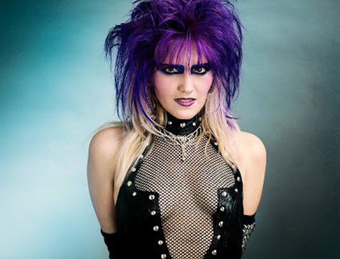

Free from clients and limitless in creative possibilities.
Meet John Scarpati, a commercial photographer who used Kickstarter to raise funds for a book archiving his photography. (Oh, and if you haven’t heard of Kickstarter yet, get excited. It’s a company that provides tools to raise funds for creative projects via crowd-funding through its website. Here’s Kickstarter’s story.
Scarpati was the house photographer for the Sunset Strip of the 1980s, the era of indulgence and tangible allure (at the time intimate bedfellows) bred in West Hollywood that didn’t really end until 1992. Thanks to John Scarpati, it remains largely intact, chronicled in his dazzling and often lurid photographs in his book Cramp, Slash, Burn.
{kind=link}
1. How did the idea of making the book come to be?
On the making of Cramp Slash & Burn, I didn’t set out to document the “Hollywood in the 80’s” part of my career. Starting about five years ago, I got a series of random phone calls and emails looking for images from one band or another for this project or that project. I had always thought of my archives as being at least somewhat organized…then I had to actually locate something in them. There were at least three different filing systems: Alphabetical, chronological, and “hey! There’s still room in this box!”
So it started as a simple organizational project. But during the process, I kept turning up these great little gems that had been buried in boxes for decades. That kept me digging for more. I started wondering, “Who the hell chose all the pictures we used back then? They missed all the good ones!” So I started going through everything I had piece by piece.
Then I figured if I was digging that far into the archival abyss, I’d better sucker some friends into helping me get through the piles and piles of film. Some of the stuff we turned up was really cool, and I thought before it was filed away and disappeared into the ether, I wanted to do something with it. Next thing I knew, I was making a book. Only I’m not a writer—Hell, I’m dyslexic. I thought it would be far more interesting to get in touch with the people in the images, the people who helped make things happen back in the day…get their stories, their memories. So I started putting out feelers, seeing if I could get enough people on board to move forward. The responses were overwhelmingly positive, and I realized pretty quickly that this was gonna happen.
Now that I had the images and the words in play, and more friends suckered in to helping me corral those who said they would write, I could move on to design. I already had the title I knew I wanted to use: “Cramp, Slash, & Burn: When Punk and Glam Were Twins”. Why that title? Because that’s how it looked through my lens. One day I was shooting a punk band, the next day it was glam rock. Sometimes I was even shooting bands whose members played for both sides. So the title was a natural fit from my perspective.
But back to the design, I knew I wanted to incorporate “80’s artifacts”…trinkets, memorabilia, ephemera that was authentic and meant something to the people whose images appeared on the pages. So I went back to my pool of writers and asked them to dig into their own archives for anything they’d be willing to mail in for me to photograph. And I got some great stuff. For example, if you look at the Fishbone spread, the rubber fish that I shot to go alongside the band image is actually IN the original image. The same for the plastic water gun opposite one of the L.A. Guns images. So this wasn’t just randomly placed, “Hey, this will look cool here” stuff…there’s rhyme and reason to the craziness.
2. How did you get the idea of raising funds with your book?
{kind=link}
Right out of the gate I knew this book had to be hardcover—a 12 x 12 coffee table art book. Printed on the best quality paper and produced on a state-of-the-art digital press. Thinking about CS&B being 12 x 12—actual record album size—just made me smile. Once I committed myself mentally to the upcoming workload I thought, “If you don’t have time to do it right, when will you have time to do it again?” This meant everything needed to be done top shelf, from scans to printing. No corners cut and everything done at the highest resolution possible. Which meant going back to the original film and re-mastering everything.
Film scans:
Linotype-Hell, Heidelberg Tango wet-mounted drum scans 4000 dpi (16bit) RGB.
Print Scans:
We ran into about 12 prints, “B&W 11×14 Ilford Fiber prints”, that were, well … just stunning!
To retain the integrity of the 80‘s fiber print look, we used a Better Light Super8K-HS Scan Back (multi-pass), whopping 600MB files were created. These came out better than I could have imagined—and none of my earlier dark room magic was lost.
Accessing the best data-capture gear and operators to digitize this media was going to be expensive, very expensive. I was going to need some financial help to execute this project the way I was rattling it around in my brain.
3. How did the process work—did you use Kickstarter?
The first place I turned for supplementary funding was Kickstarter, a relatively new upstart then, but a super fun crowd sourcing website for the arts. Kickstarter was a great experience all around: From the interaction with the backers to forcing me to delve even deeper into fleshing out the books’ direction, concept, and production flow. Kickstarter requires the campaign creator to generate a pitch page with an introduction video, which meant I really needed to develop a strong mission statement and the project into critical focus.
4. What did you use the proceeds for?
The funds received from the Kickstarter campaign were used to cover the bulk of my first stage production—the scanning costs. It wasn’t realistic to ask the book’s fans, my family, and friends to bear the entire brunt of the production cost. This was a labor of love after all. The average bear would have opted for a much less demanding production flow, thus I didn’t set my fundraising goal that high. It was nothing near what I actually needed to produce the book—just enough to help take the financial edge off and give me that emotional bump I needed to get started.
With generous support from fans and like-minded rockers, the Kickstarter page did meet its goal and the project was successfully funded. The best part of using Kickstarter was how it had me documenting the creation process every step of the way, and it continues to this day. The documentation process could now continue past the successful Kickstarter event and take on a life of its own, opening up the official “Cramp Slash & Burn” conjoining Facebook page.
5. What was the reception?
Do you mean besides the perfect excuse for me to fly to Hollywood, have an art show at my favorite Gallery in Los Angeles, La Luz De Jesus, and hang out with the hooligans from my twenties in our old stomping grounds? I’m sure there was, but I can’t think of it right now.
6. Do you have any projects coming up in the future?
Oh I always have any given number of personal art projects running around in my head…but for the moment it’s time to work the paid gigs for a while. That way I can afford to once again embark on another personal endeavor. It’s a bad and expensive habit this thing called art. At least when it’s done I have something awesome to show for it, it helps keep me happy—and young.